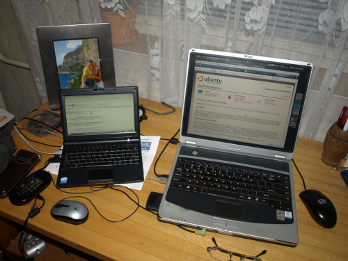

Ubuntu Eee ant Eee PC 900
Kaip žinia nesenai BMS pardavinėjo Asus Eee PC 900 po 599 Lt. Tai aš irgi vieną įsigijau, ne sau, bes savo sesei.
{kind=link}
Kadangi pagal nutylėjimą įdiegta Xandros operacinė sistema yra tokia ganėtinai
vaikiška, tai nusprendžiau į jį įdiegti Ubuntu eee. Nors tikėjausi, kad įdiegus viskas pradės
veikti iš karto, bet deja taip nebuvo, teko sekti nurodymus ir derinti, bet
galiausiai turiu pilnai veikiančią sistemą. Nors yra ne vienas įrankis LiveUSB
kūrimui iš ISO atvaizdų, tačiau Ubuntu Eee atveju, reikia naudotis kankrečiai
jų pagamintu įrankiu UNetbootin, nes kiti neveiks. Standartiniai LiveUSB kūrimo
įrankiai paprasčiausiai užrašo ISO failo turiny ant USB failų sistemos. O
UNetbootin paprasčiausiai kopijuoja failus, o po to padaro reikiamus boot
įrašus. Diegimo metu reikėtu atsižvelgti į vienintelę rekomendaciją, disko skirstymo metu
naudoti Ext2 failų sistemą. Taip pat diskų tvarkymo dalyje, aš pasirinkau
rankinį diskų tvarkymo režimą, ten ištryniau visus Eee 900 diskus, kurių buvo 4
ir sukūriau vieną Ext2 skirsnį, kuriam priskyriau / montavimo tašką.
Kas neveikė po įdiegimo ir kaip tai sutvarkyti Kadangi iš esmės daugelis
dalykų veikė, tai aprašysiu, kas neveikė:
Garso įrašymas (instrukcijos kaip taisyti)
Optimizacijos mažinančios skaitymų/rašymų skaičių į Eee Flash atminies kortelę (instrukcijos kaip taisyti), šioje vietoje būkite atsargūs, jei netyčia klaidingai ką nors nurodysite, gali nebe užsikrauti grafinė aplinka, kaip kad man ir atsitiko. Jei taip atsitiks ir jums, tai užkraukite Eee PC iš LiveUSB, primontuokite sugadintą skirsnį sudo mount -t ext2 -o rw /dev/sda1 /mnt ir pataisykite ką sugadinote faile sudo gedit /mnt/etc/fstab.
Ne visada suveikia shut down (instrukcijos kaip taisyti)
Neveikė webcam (internetinė kamera), nors tiesą sąkant ji veikė, tik tiek, kad buvo išjungta BIOS nustatymuose, bet kokiu atveju, galite žiūrėti instrukcijas kaip taisyti
Problemos su atnaujinimais, siūlo atlikti „Partial Update“, dėl kažkokių tai blogų paketų. Tai aš paprasčiausiai užėjau į Home - Administravimas - Software Sources - Third-Party Software ir atžymėjau paskutinį repozitoriumą (http://www.array.org/ubuntu hardy eeepc), tada visi atnaujinimai įsidiegė sėkmingai. Po atnaujinimo, jei paprašys perkrauti kompiuterį, taip ir padarykite.
Home mygtuko funkcija – grįžimas į pradinį desktopą instrukcijos kaip nustatyti
CPU Frequency Scaling, šiaip tai tas dalykas veikia normaliai, tik tiek, kad į panelę įkėlus CPU Frequency Scaling apletą, neleidžia pasirinkti procesoriau dažnio, tam reikia įvesti tokią komandą ir pradės veikti: sudo chmod +s /usr/bin/cpufreq-selector
Baterijos įkrovos indikatorius neįspėja apie tai, kad baterija jau išsikrovė, kompiuteris tiesiog išsijungia. Man taip nutiko intensyvaus atnaujinimo metu. Baterijos indikatorius rodė, kad dar yra 5 minutės laiko. Po to kai Eee išsijungė, gavau pranešimą, kad reikia paleisti fsck rankiniu būdu, tačiau tam reikia prisijungti su sistemos administratoriaus slaptažodžiu. Slaptažodis kažkodėl nesuveikė, tai paleidau Eee iš LiveUSB, ten įsijungiau terminalą ir paleidau fsck rankiniu būdu: sudo fsck.ext2 -y /dev/sda1. Fsck kažką surado, kažką pataisė ir perkrovus Eee vėl pradėjo veikti. Tai gi, būkite atsargūs su baterija. Jei rodo, kad liko 20%, tai jau galite pradėti krauti.
Atrodo apturėjau visas įmanomas problemas, todėl tikiuosi jums bus lengviau jas spręsti.. :)
Lietuvių kalbos pilnas įdiegimas¶
Čia tiems, kurie nori turėti Lietuvišką naudotojo sąsają. Tikriausiai diegimo metu jau pasirinkote Lietuvių kalbą, tačiau to nepakanka, nes į vieną LiveUSB visų kalbų pilno palaikymo nesutalpinsi. Tai gi, kad turėtumėte pilnai lietuvišką naudotojo sąsają eikite į: Home - Administravimas - Language Support, sąraše suraskite ‘Lithuanian’ ir uždėkite paukščiuką ir spauskite ‘Apply’. Po šių veiksmų bus įdiegti visi reikalingi dalykai Lietuvių kalbai.
Standartinių Xandros programų įdiegimas¶
Jei žiūrinėjote standartines Eee PC programas, tai radote daug visokių programų mokymuisi, visokių žaidimų ir t.t. Ubuntu Eee galite turėti viską ir dar daugiau. Nežinau kodėl, bet programų paleidimo panelėje nėra įrankio „Įdiegti/pašalinti…“. Jį galima įkelti labai paprastai. Spauskite Alt+F2 ir įrašykite: alacarte. Atsidariusiame lange šone pasirinkite „Programos“, o dešinėje, tempkite „Įdiegti/Pašalinti..“ ant „Favorites“. Po šių veiksmų pagrindinėje panelėje turėtu atsirasti „Programos“, kur ir rasite „Įdiegti/Pašalinti“. Paleidus „Įdiegti/Pašalinti“ galėsite sužymėti visas programas kurių reikia ir iš karto visas įdiegti.
Lietuvių - Anlgų kalbų žodymas Opendict¶
Tikriausiai prisireiks šio dalyko, kuris pagal nutylėjimą nėra įdiegtas. Žodynas vadinasi „Opendict“, todėl galite jį susirasti aukščiau aprašytame programų diegimo įrankyje, pažymėti ir įdiegti. Taip pat galite pasinaudoti viena komanda: sudo apt-get install opendict. Žodynus Opendict programai galite atsisiųsti iš šių vietų:
Anglų - Lietuvių, Vokiečių - Lietuvių spauskite ant .deb failų.
Pracūzų - Lietuvių spauskite ant .deb failų.
{kind=link}
{kind=link}
{kind=link}
{kind=link}
{kind=link}
{kind=link}
{kind=link}
{kind=link}
{kind=link}
{kind=link}